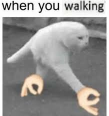
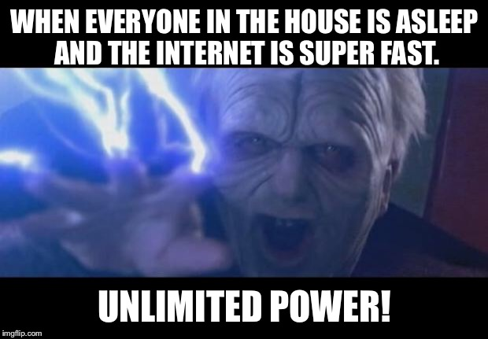
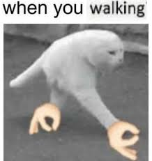
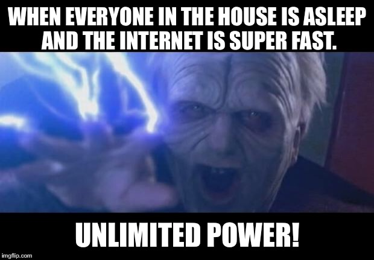

Formato clasico: Consta de colocar texto sobre una imagen en la cabezera y pie de esta imagen. La imagen suele ser un contenido predefinido que suele indicar con que proposito y expresión se hace el texto que esta sobre la imagen.
Formato moderno: Es muy parecido al formato clasico, pero el texto esta en un segmento de fondo blanco arriba de la imagen, la imegen de abajo puede relacionarse universalmente con el texto superior. Este formato fue creado en la red social 4chan en la que la forma de publicar las imagenes con texto coloca el texto arriba de la imagen publicada, los usuarios empezaron a usarlo como formato de meme mediante screenshots.
Rage comics: Son el primer formato de meme jamas popularizado en el internet. Constan de comics que narran una historia ironica y cierta en la que los personajes son representados con dibujos de caras segun lo que esten haciendo o reaccionando como si fueran stickmans.
Surreal memes: Son memes que carecen de buena ortografia, contexto e, incluso, sentido. Principalmente es la relación conflictiva entre este personaje meme-man y el nefasto y desagradable orang. Muchas veces el escenario es un espacio no identificado como si fuera otro plano de la existencia y no se respeta la logica de ningun tipo.
Dank memes: Tipo de memes que tocan temas delicados como el olocausto o tragedias recientes como harambe o el 9/11 (bush lo hizo) por lo que pueden llegar a ser ofensivos. En otras ocasiones son simplemente el añadir efectos visuales y de sonidos como el muy conocido "bass boosted" o aumentar la intensidad de un sonido ya de por si muy agudo.
Clasical art of memes: Algunas pinturas de la antigua epoca, hecahs a mano, pueden no tener una representación del facial de las personas exacto o incluso normal, esto dio cabida a que el internet use estas irregularidades en las caras de pinturas clasicas a ridiculizarlas en contxtos muy alejados de cuando fueron hechos.